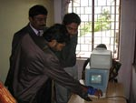
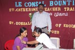
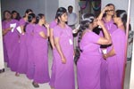
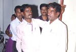
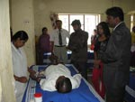
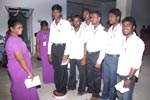
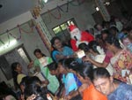

Extras

In our institution We had consistently conducting every year. Social health camp, especially the extra care has taken for the eye care.
Dr.Agarwal Eye Care team carried out eye check up for medical camp the separate team for eye care and eye power check-up for the students and the people those who are living near our institution. The eye specialist, Shri. Dr. A SIVAKUMAR Ophthalmologist done Eye check up for the Students and the people.
The Eye medical team has gave the spectacles for the students and the people. The proper Eye care and advise was given to the students. This eye camp program had yield much fruitful result for the students learning ability. This camp enhance the students eye awareness and eye power. More people are benefited from the eye camp this leads new vision for the students and society.
{kind=link}

Regularly in our Institution every year we are conducting the Medical camps. we had conducted the Medical camp for the students and people those who are living near in our Institution. This medical camp plays a significant role in the student’s health awareness. There are four kinds of teams involved in the medical camp
(i).Eye checkup team
(ii).Blood donation
(iii).Ortho check up
(iv).Senility complications(Old age health problems)
This medical camp was inaugurated by Shri.Jangid I.P.S Urban Police Commissioner, Chennai, Tamilnadu. Health specialists and Experts gave treatment and awareness to the students and people
We had conducted medical camp on subsequent year held in our Institution. All the students and people were benefited in the medical camp. Female doctors examined the female students. Girls had medical group discussion with the female doctors, so that they can get clarified with their medical doubts.
  {kind=link}
{kind=link}
{kind=link}
The significant life saving event carried out by our Institution.This Blood donation camp was done by T.T.K Parma Group Ltd. Blood donated by our students and our honorable Chairman to the people those who are in the critical health condition.
{kind=link}
Ortho check up was carried out by Dr.JAMBU, Ortho specialist from Sree.Ramachandra Hospital, Porur. He had done remarkable treatment and awareness about Bone and significance, complications related to the Bones. The specific Bone Instrument was used to determine the Bone strength and evaluation of calcium in the Bone. This Ortho camp gave the adequate knowledge about Bones .
{kind=link}
Every year Christmas eve celebrated in our institution. 2009 Christmas celebration started with prayer and followed by the students cultural Activites.The chief guest Rev.Father Martin had gave the cermon about the god and the latest events in around the globe
{kind=link}